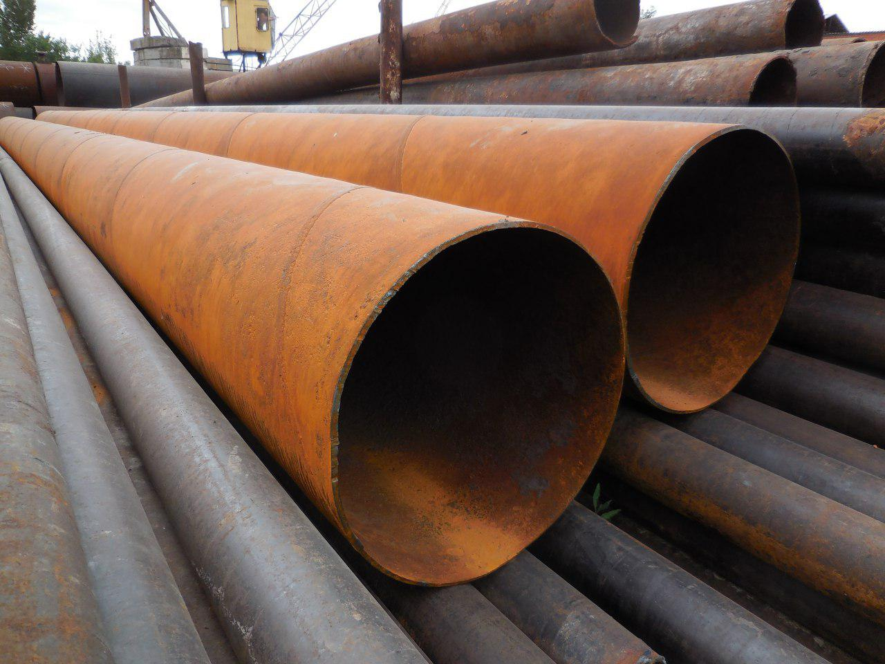

Введение в многопоточность. Класс Thread
Одним из ключевых аспектов в современном программировании является многопоточность. Ключевым понятием при работе с многоопоточностью является поток. Поток предствляет некоторую часть кода программы. При выполнении программы каждому потоку выделяется определенный квант времени. И при помощи многопоточности мы можем выделить в приложении несколько потоков, которые будут выполнять различные задачи одновременно. Если у нас, допустим, графическое приложение, которое посылает запрос к какому-нибудь серверу или считывает и обрабатывает огромный файл, то без многопоточности у нас бы блокировался графический интерфейс на время выполнения задачи. А благодаря потокам мы можем выделить отправку запроса или любую другую задачу, которая может долго обрабатываться, в отдельный поток. Поэтому, к примеру, клиент-серверные приложения (и не только они) практически не мыслимы без многопоточности. Основной функционал для использования потоков в приложении сосредоточен в пространстве имен System.Threading. В нем определен класс, представляющий отдельный поток - класс Thread.
Класс Thread определяет ряд методов и свойств, которые позволяют управлять потоком и получать информацию о нем. Основные свойства класса:
Статическое свойство CurrentContext позволяет получить контекст, в котором выполняется поток
Статическое свойство CurrentThread возвращает ссылку на выполняемый поток
Свойство IsAlive указывает, работает ли поток в текущий момент
Свойство IsBackground указывает, является ли поток фоновым
Свойство Name содержит имя потока
Свойство Priority хранит приоритет потока - значение перечисления ThreadPriority
Свойство ThreadState возвращает состояние потока - одно из значений перечисления ThreadState
Некоторые методы класса Thread:
Статический метод GetDomain возвращает ссылку на домен приложения
Статический метод GetDomainID возвращает id домена приложения, в котором выполняется текущий поток
Статический метод Sleep останавливает поток на определенное количество миллисекунд
Метод Abort уведомляет среду CLR о том, что надо прекратить поток, однако прекращение работы потока происходит не сразу, а только тогда, когда это становится возможно. Для проверки завершенности потока следует опрашивать его свойство ThreadState
Метод Interrupt прерывает поток на некоторое время
Метод Join блокирует выполнение вызвавшего его потока до тех пор, пока не завершится поток, для которого был вызван данный метод
Метод Start запускает поток
Получение информации о потоке
Используем вышеописанные свойства и методы для получения информации о потоке:
using System.Threading;
....................
static void Main(string[] args)
{
// получаем текущий поток
Thread t = Thread.CurrentThread;
//получаем имя потока
Console.WriteLine($"Имя потока: {t.Name}");
t.Name = "Метод Main";
Console.WriteLine($"Имя потока: {t.Name}");
Console.WriteLine($"Запущен ли поток: {t.IsAlive}");
Console.WriteLine($"Приоритет потока: {t.Priority}");
Console.WriteLine($"Статус потока: {t.ThreadState}");
// получаем домен приложения
Console.WriteLine($"Домен приложения: {Thread.GetDomain().FriendlyName}");
Console.ReadLine();
}